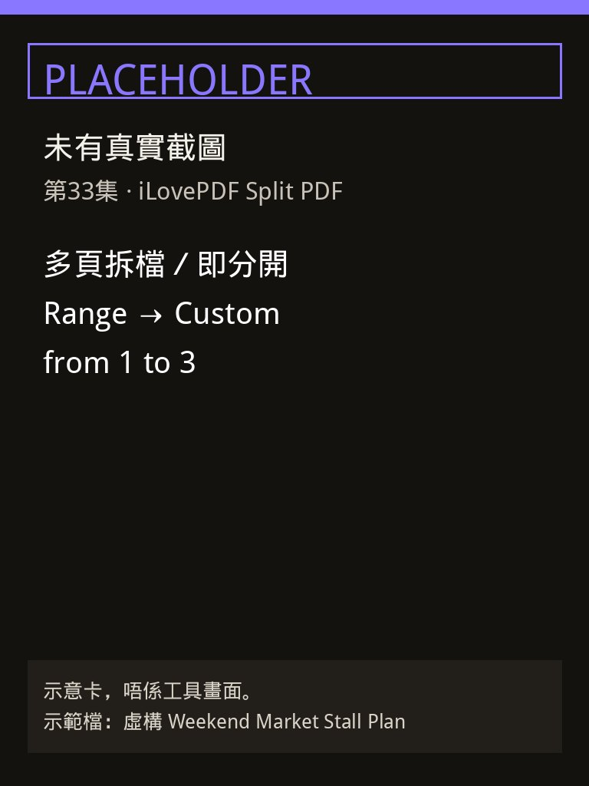
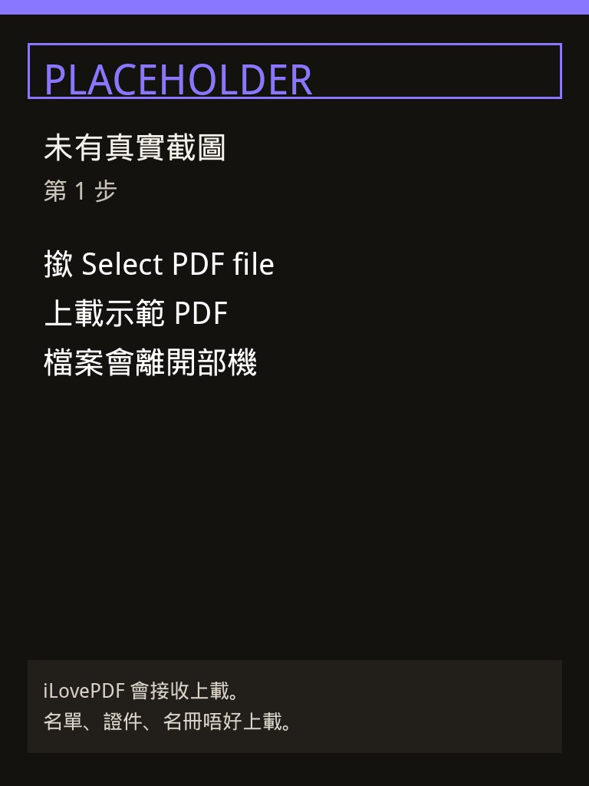
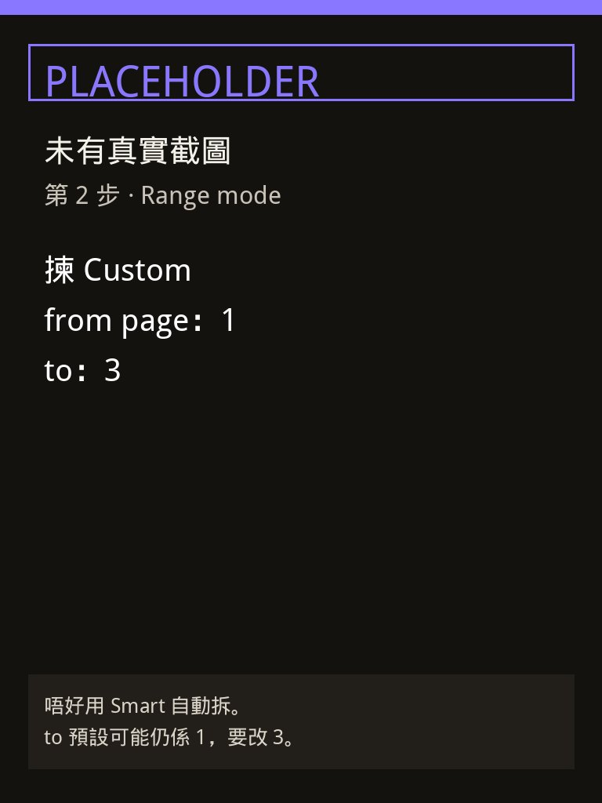
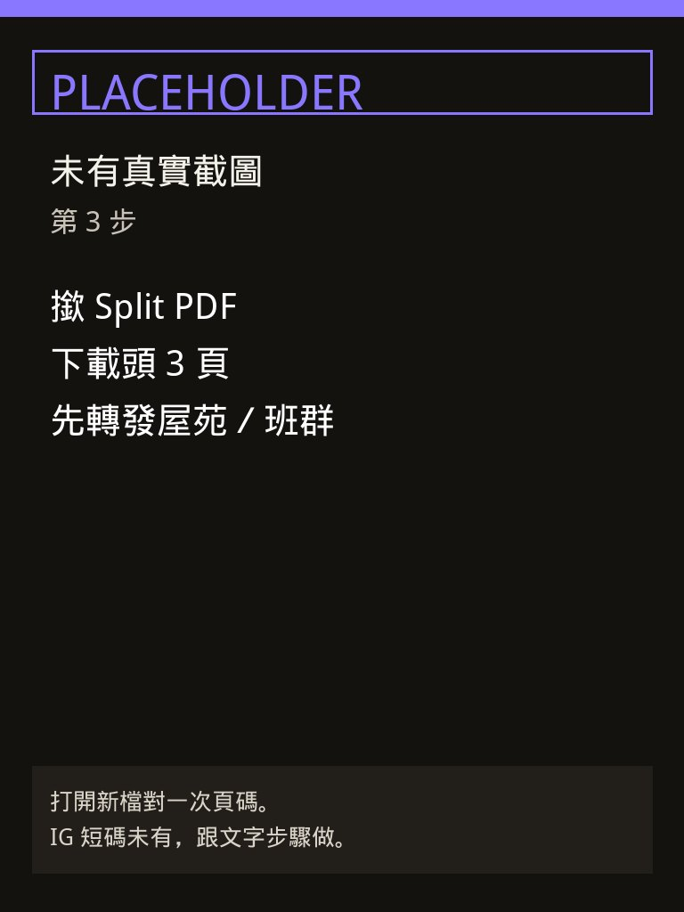

屋苑 WhatsApp 群或者班群成日有人傳一份多頁 PDF。你只要頭幾頁（時間、地點、要帶咩）轉發，成份檔又大又易轉錯頁。第33集用 iLovePDF Split PDF：撳 Select PDF file，Range mode 揀 Custom，from page 填 1、to 填 3，再撳 Split PDF。示範檔叫 Weekend Market Stall Plan，虛構週末市集檔口安排，無商戶品牌、無真實屋苑名、無學生姓名。
Reel 一句講晒：iLovePDF｜多頁拆檔／即分開
圖係步驟示意，唔係工具畫面：呢頁未有當日工具截圖。下面四張寫住 PLACEHOLDER，只係提醒步驟，唔好當成 iLovePDF 畫面。掣名以你當日網站為準。
你會學到
- 點樣開 ilovepdf.com 嘅 Split PDF，撳 Select PDF file 上載一份 PDF
- 點樣喺 Range 揀 Custom，from page 填 1、to 填 3
- 點樣撳 Split PDF，下載頭 3 頁，先轉發去屋苑群或者班群
開始前準備
- 瀏覽器開 Split PDF。本集示範冇登入、冇裝 App
- 一份多過 3 頁嘅 PDF。示範用自製虛構檔 Weekend Market Stall Plan，內容係週末市集檔口安排，無商戶名、無真實屋苑、無學生名
- 屋苑業主名單、單位地址、學生名冊、身份證、收據留喺自己部機。呢個工具會上載檔案

3 步做法
-
撳 Select：開上面條 Split PDF。上載前嘅大掣寫住 Select PDF file，撳佢揀 Weekend Market Stall Plan，或者將 PDF 拖入頁面。
檔案會上載去 iLovePDF 先至拆到。官方安全頁寫處理過嘅檔案兩小時內自動永久刪除，下載頁亦可以自己手動刪除。兩小時唔等於可以上載名單。
示範冇登入。雲端（Google Drive、Dropbox）係另一條上載路，本集唔用。

示意卡（PLACEHOLDER，未有真實截圖）：第 1 步撳 Select PDF file。唔係工具截圖。 -
設 Custom（from 1 to 3）：上載之後揀 Range。Range mode 有三個：Custom、Fixed、Smart。本集撳 Custom。說明文字係 Custom ranges。
Custom 下面有兩格：from page 同 to。from page 填 1，to 填 3。2026-10-15 打開工具頁，呢兩格嘅起始值都係 1。to 如果留喺 1，拆出嚟就得第 1 頁。
Fixed 係每 N 頁一截。Smart 係按檔案內容自動拆，旁邊有說明「Detect automatically the ranges」。本集自己填 1 到 3，唔撳 Smart，亦唔加第二段範圍。Add Range 同「Merge all ranges in one PDF file」本集唔用。

示意卡（PLACEHOLDER，未有真實截圖）：Range mode 揀 Custom，from page 1、to 3。唔係工具截圖。 -
撳 Split：範圍係 1 到 3，先撳 Split PDF。官方教學寫完成範圍之後就係呢個掣。2026-10-15 嘅靜態頁未見到上載後個掣；上載之後跟你畫面嘅 Split PDF。
下載拆出嚟嘅檔，打開對一次：係咪第 1 至第 3 頁、有冇多咗私人頁。啱先轉發去屋苑群或者班群。成份 Weekend Market Stall Plan 唔好原封轉發。
免費額度、頁數同上載上限以當日價目表為準。本頁冇寫死一個 MB 數字。

示意卡（PLACEHOLDER，未有真實截圖）：撳 Split PDF，對完頁碼先轉發。唔係工具截圖。
常見錯誤／注意事項
- 撳咗 Smart：集數網址帶 smart，步驟係 Range 入面嘅 Custom。Smart 會按內容自動拆，唔係「第 1 至第 3 頁」。
- to 留喺 1：2026-10-15 工具頁，from page 同 to 起始都係 1。要改 to 做 3，先至係頭 3 頁。
- 成份檔轉發去群：拆完、打開對過頁碼，先將頭 3 頁嗰份轉去屋苑群或者班群。
- 上載真實名單或者證件：檔案會離開你部機。官方寫處理後兩小時內刪除。屋苑名單、學生名冊、身份證、收據仍然唔好上載。示範檔全屬虛構。
- 當示意卡係畫面：呢頁四張圖都寫住 PLACEHOLDER。掣名改咗，以你當日網站為準。
示範檔 Weekend Market Stall Plan 虛構，無商戶品牌。頭 3 頁先轉發。名單、證件、名冊唔好上載。
香港用戶留意
用瀏覽器開英文介面就得，示範冇註冊、冇裝 App。掣名係英文：Select PDF file、Range、Custom、from page、to、Split PDF。屋苑群同班群轉發之前，打開新檔對一次頁碼。iLovePDF 有繁體中文介面，掣名可能唔同；本集對齊 2026-10-15 英文工具頁。
官方說明
- Split PDF（iLovePDF 工具頁）
2026-10-15 打開：上載掣係 Select PDF file。Range mode 有 Custom（說明 Custom ranges）、Fixed、Smart。Custom 有 from page 同 to，起始值都係 1 - How to Split PDF pages for free（iLovePDF 教學，2021-03-10）
教學寫：去 Split by range，揀 Custom ranges，填要拆嘅頁，再撳 Split PDF。例子包括只留 1–3。2026-10-15 工具頁嘅 Custom 仍然係自己填頁碼；Smart 係之後先有嘅自動拆，本集唔用 - Security（iLovePDF）
2026-10-15 打開：處理過嘅檔案兩小時內自動永久刪除，下載頁可以自己手動刪除。已簽署文件另有最長 5 年保留，本集唔涉及簽署 - Pricing（iLovePDF 價目表）
2026-10-15 打開：價目表有 Split PDF 同 Split PDF（Smart）兩行。免費頁數同上載上限以你當日表格為準，本頁冇寫死一個數字
（工具頁、教學、安全頁同價目表當日打開。逐步圖係示意卡，未有真實截圖。介面可能更新，以官方為準）
原帖
睇原 Reel ↗（2026-10-16 發佈）